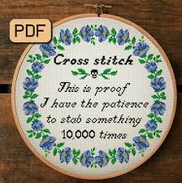

Why should you cross stitch? Have you ever had too many thoughts in your head, that it overwhelms you? Cross Stitch is therapeautic. It allows you to gather your thoughts. You are able to let the negative thoughts flow out of you and make a beautiful piece of work.
I also enjoy cross stitching as I feel it gives me a connection to my ancestors. I feel like stitching allows me a better feel of what life was like back then.
You can purchase kits at Walmart or your local craft stores. You can also purchase patterns online. There are several youtube videos that teach the different stitches.